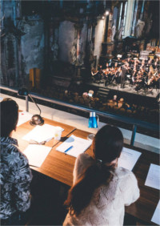
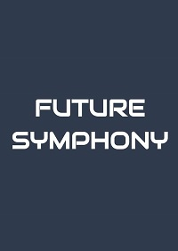
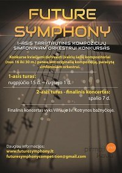

FUTURE SYMPHONY
TARPTAUTINIS KOMPOZICIJŲ SIMFONINIAM ORKESTRUI KONKURSAS
TARPTAUTINIS KOMPOZICIJŲ SIMFONINIAM ORKESTRUI KONKURSAS


Sveiki atvykę!
Mes džiaugiamės galėdami paskelbti I-ąjį tarptautinį kompozicijų simfoniniam orkestrui konkursą „Future Symphony“. Šiuo konkursu siekiame paskatinti jaunąją kompozitorių kartą kurti orkestrinę muziką ir įleisti gaivaus oro gūsio į mūsų muzikinį kultūrinį gyvenimą. Mes kviečiame jaunus kompozitorius išbandyti savo jėgas konkurse, parašant trumpą (5-12 min.) kūrinį simfoniniam orkestrui. Konkurse kviečiami dalyvauti įvairių šalių kompozitoriai (nuo 16 iki 30 m.).
Pagrindinė informacija:
Pagrindinė informacija:
- Dalyvio mokestis privalo būti sumokėtas iki 2018 m. liepos 15 d., kūrinių partitūros priimamos iki 2018 m. rugpjūčio 15 d.;
- Partitūros, patekusios į finalinį konkurso etapą, bus atliktos specialiai suburto konkursui simfoninio orkestro. Konkursas suteikia kompozitoriams išskirtinę galimybę išgirsti savo kūrinius, parašytus simfoniniam orkestrui, ir gauti jų profesionalius įrašus;
- Konkurse kompozitoriai išlieka anonimiški iki rezultatų paskelbimo;
- Registracijos mokestis – 50 eur;
- Prizinis fondas – 1000 eur ir profesionalūs konkurso kūrinių įrašai.
Naujienos

2018 m. rugsėjo 1 d. - 18:00

I-ojo turo rezultatai
Konkurso žiuri komisija atliko savo darbą puikiai ir atrinko 7 konkurso dalyvius, patenkančius į II-ąjį finalinį konkurso etapą: 🇱🇹 Matas Drukteinis, 🇺🇸️ Robert Ge, 🇨🇳 Xiaoran Jiang, 🇱🇹 Aleksej Kalinin, 🇨🇳 Pengyi Li, 🇬🇪 Giorgi Papiashvili, 🇰🇷️ SiHyun Uhm. Didžiausi sveikinimai kompozitoriams! Jų simfoniniai kūriniai bus atlikti gyvia spalio 7 d. šv. Kotrynos bažnyčioje, Vilniuje.
Skaityti daugiau
Konkurso žiuri komisija atliko savo darbą puikiai ir atrinko 7 konkurso dalyvius, patenkančius į II-ąjį finalinį konkurso etapą: 🇱🇹 Matas Drukteinis, 🇺🇸️ Robert Ge, 🇨🇳 Xiaoran Jiang, 🇱🇹 Aleksej Kalinin, 🇨🇳 Pengyi Li, 🇬🇪 Giorgi Papiashvili, 🇰🇷️ SiHyun Uhm. Didžiausi sveikinimai kompozitoriams! Jų simfoniniai kūriniai bus atlikti gyvia spalio 7 d. šv. Kotrynos bažnyčioje, Vilniuje.
Skaityti daugiau
2018 m. rugpjūčio 16 d. - 15:00

Konkurso “Future Symphony“ I-ojo turo pradžia
Registracija į konkursą "Future Symphony" yra uždaroma. Mes džiaugiamės sulaukę 14 talentingų kompozitorių anketų iš Lietuvos ir užsienio šalių. I-asis turas prasideda rugpjūčio 16 d., kurio metu konkurso žiuri per 15 dienų atrinks pačias geriausias simfonines partitūras finaliniam koncertui. Rezultatai bus paskelbti rugsėjo 1 d.
Skaityti daugiau
Registracija į konkursą "Future Symphony" yra uždaroma. Mes džiaugiamės sulaukę 14 talentingų kompozitorių anketų iš Lietuvos ir užsienio šalių. I-asis turas prasideda rugpjūčio 16 d., kurio metu konkurso žiuri per 15 dienų atrinks pačias geriausias simfonines partitūras finaliniam koncertui. Rezultatai bus paskelbti rugsėjo 1 d.
Skaityti daugiau
2018 m. balandzio 14. d - 15:00
2018 m. balandžio 15 d. skelbiama registracija į konkursą “Future Symphony“
Mes džiaugiamės galėdami paskelbti registraciją į I-ąjį tarptautinį kompozicijų simfoniniam orkestrui konkursą “Future Symphony“. Kūrinių partitūros yra priimamos 2018 m. nuo balandžio 15 d. iki rugpjūčio 15 d. Dalyvio mokestis privalo būti sumokėtas iki liepos 15 d. Skaityti daugiau
Mes džiaugiamės galėdami paskelbti registraciją į I-ąjį tarptautinį kompozicijų simfoniniam orkestrui konkursą “Future Symphony“. Kūrinių partitūros yra priimamos 2018 m. nuo balandžio 15 d. iki rugpjūčio 15 d. Dalyvio mokestis privalo būti sumokėtas iki liepos 15 d. Skaityti daugiau
Nuostatai
Paraiška į konkursą
Kompozitoriai, norintys dalyvauti konkurse, turi atsiųsti el. paštu:
iki 2018 m. liepos 15 d.:
Anketą rasite čia.
Siųsdami paraiška į konkursą jūs sutinkate su konkurso nuostatais.
iki 2018 m. liepos 15 d.:
- užpildytą anketą;
- dalyvio mokesčio pavedimo kopiją.
- kūrinio partitūra PDF formatu;
- kūrinio audio įrašas mp3 formatu (padarytas iš notografinių programų);
- dalyvio nuotrauka.
Anketą rasite čia.
Siųsdami paraiška į konkursą jūs sutinkate su konkurso nuostatais.
Kontaktai
Renginio organizatoriai:
Všį „Pirmoji Kava“ – www.jmr.lt
Projekto vadovai:
Adomas Morkūnas-Budrys
Danielius Tuita
Džiugas Sabonis
Orkestro vadybininkas:
Danielius Tuita
Džiugas Sabonis
Džiugas Daugirda
El. paštas:
Facebook:
Internetinio puslapio kūrėjas:
Cornelius Kummer – www.corneliuskummer.de